Bluetooth Multimeter is an intelligent peripheral of android phones, specially designed for engineers. Not only can it easily collect data such as voltage, current and resistance etc., this multimeter can also communicate with phones via bluetooth. Thus, the data gathered will be displayed on your phones. Continuous optimization of hardware and software guarantees this multimeter’s measurement accuracy.
Both its hardware and software are open source! Besides, we also provide API as well as detailed instructions, making this Bluetooth Multimeter an open platform for developers to use and re-develop more conveniently. It can gather data of various sensors, such as heartbeat, and then transmit it to smartphones for data-monitoring. The perfect combination of hardware and software provides infinite possibility for your application and exploitation.
This Bluetooth Multimeter features a built-in lithium battery and rechargeable circuit. Strict control of power consumption in the software ensures the easy application of this product. Acrylic shell makes it easy to assemble on the one hand, and makes the product stable and reliable on the other hand.
Model: ARD00400P
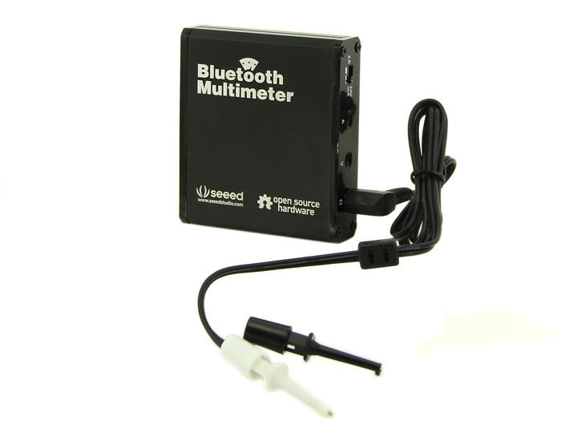
| Item | Min | Typical | Max | Unit |
|---|---|---|---|---|
| Voltage Measurement Range | -30 | - | 30 | VDC |
| Voltage Measurement Precision | 3 | % | ||
| Current Measurement Range(Max) | 1 | A | ||
| Current Measurement Precision | 3 | % | ||
| Resistance Measurement Range | 10 | - | 1,000,000 | Ω |
| Voltage Measurement Precision | 5 | % | ||
| Work Temperature | 0 | - | 45 | ℃ |
The Bluethooth Multimeter and Android device work sketch map as show below:
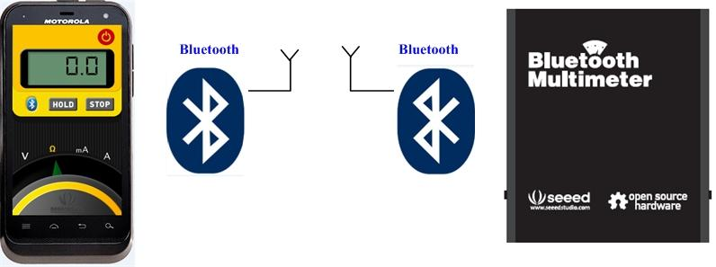
This Bluetooth Multimeter is a portable multimeter, a device that gathers the voltage, resistance and current. And it can sent these data to other devices via Bluetooth, so that we could observe the data through other devices. Next we will demonstrate you how to use it.
Note: While there are neither BT MULTIMETER device to select nor the ”Scan for device” option to search, you can firstly use phone to paire with Bluetooth Multimeter and run the app after paired.
Like other Multimeters, the bluetooth multimeter have several notes in using, for example: donot measure resistance when you supply power for it. So we suggest strongly you to read the notes of multimters for fear that the device cannot use normally.
Measure Resistance
Now let’s measure resistance. When Android App and Multimeter are connected, choose resistance (i.e. move the cursor to Ω), Audio line connecte to the connector(marked R) of Bluetooth Multimeter.
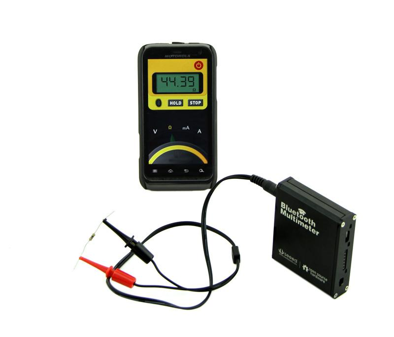
Measure Voltage
It’s very simple to measure the voltage. Just move the cursor of the Android App to V, and move the Audio line to VOL connector, then you can see the value of voltage.
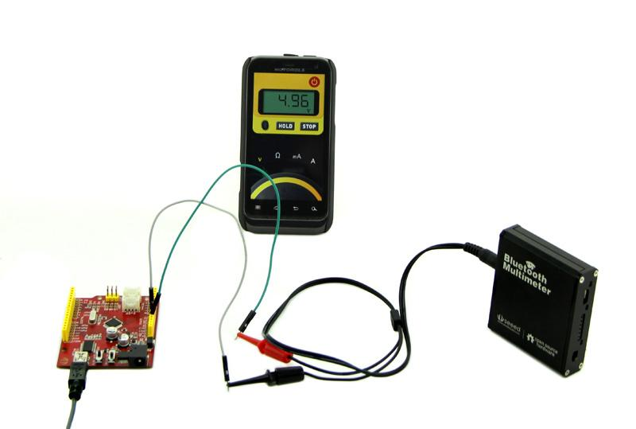
The method of measuring current is as same as other multimeter. Need to remind you that select correct current range.
Note: It is necessary to check whether audio line is connected to corresponding connector and the cursor is in correct place in order to own precise data.
We have three Android App UI for Bluetooth Multimeter.
| 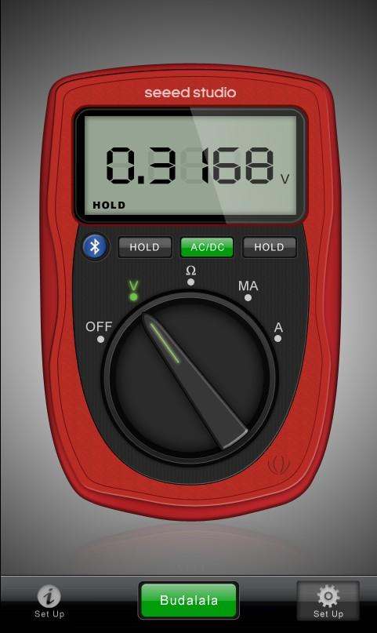 UI 1.jpg |
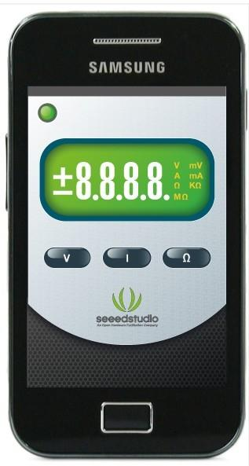 UI 2.jpg |
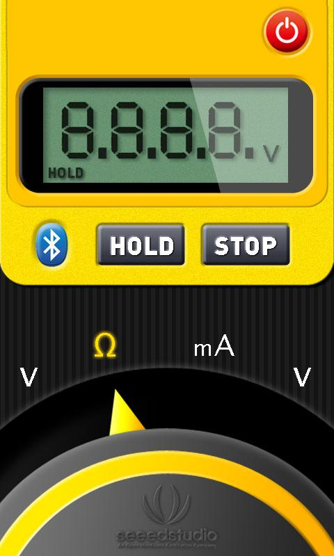 UI 3.jpg |
We consistency agreed that the color of the previous two versions are not bright, it should use the orange and black or red and black two multimeter universal tone; At the same time, We increase Hold button, Range button, dial (mA, A, Ω, V, OFF (optional) five stalls)in the yellow version. And We post about which version do you like. Below is the feedback information:
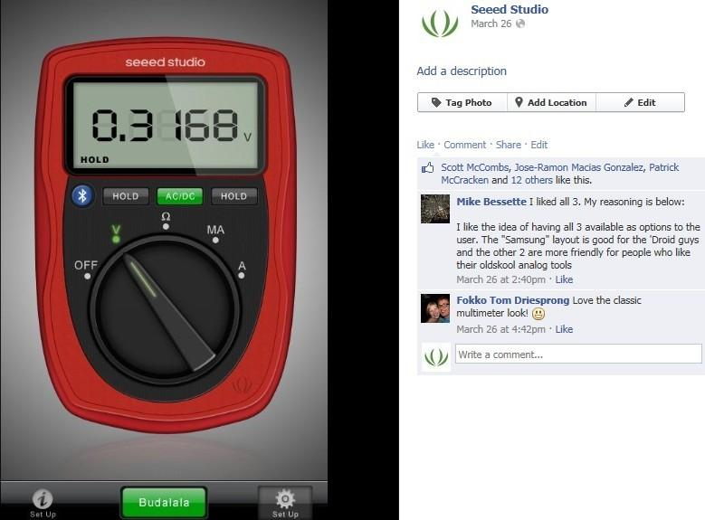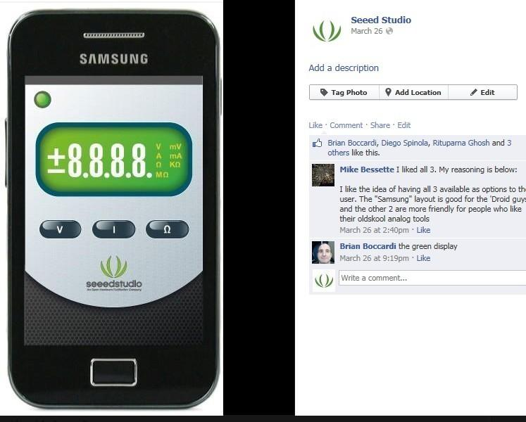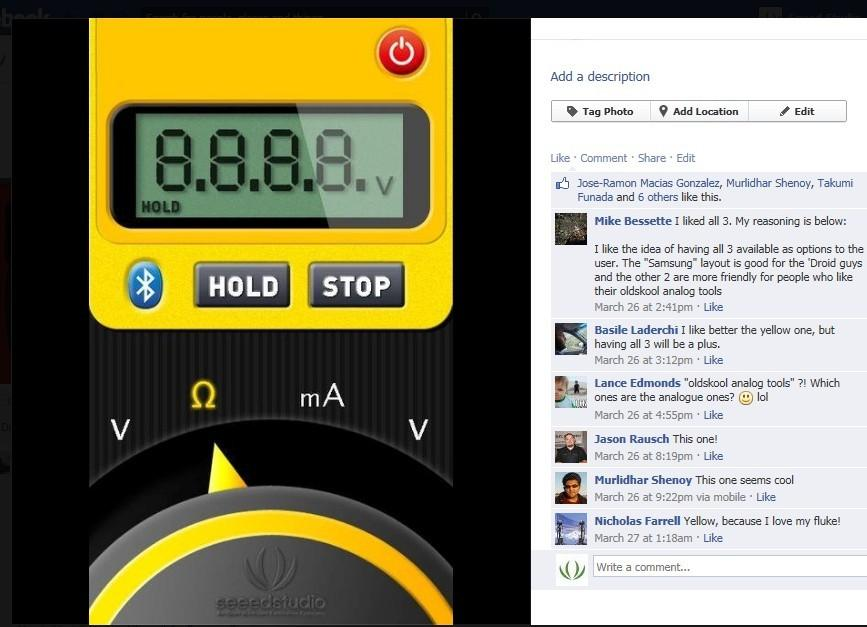
Effect Drawing
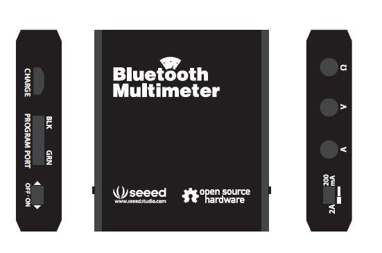
Printed Picture
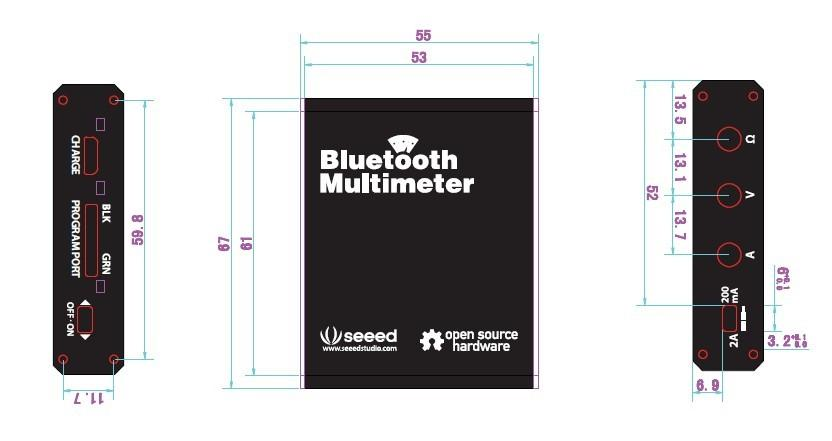
Bluetooth Multimater Eagle File
File: Bluetooth Multimeter Library
the application program package:SmartMeter
If you have questions or other better design ideas, you can go to our forum or wish to discuss.
Copyright (c) 2008-2016 Seeed Development Limited (www.seeedstudio.com / www.seeed.cc)